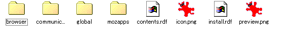

まずはファイルを覗いてみよう
まずは、サンプルとしてサイトのテーマを転がしてありますのでダウンロードしてください。
その後、ファイルの拡張子をxpiからzipに変更して、解凍すると
chrome/suzuri.jar
chrome.manifest
icon.png
install.rdf
preview.png
というファイルが出てきます
この中の拡張子がjarのファイルがテーマの実体です。これも実は正体はzipファイルだったりするので、拡張子をjarからzipに変更して解凍します
そもそもJARファイルって何？
JAVA Archiveの略でJAVAプログラムをWEB上で配布するときにzip圧縮してまとめることで、回線の無駄を無くすための形式です。
同じzip圧縮なので、便利だと思って流用したのでしょう、おそらく…
そもそもXPIファイルって何？
Cross-Platform Installの略語で、JARファイルの様にファイルをひとつにまとめて配布するために使われているMozillaでのファイル圧縮形式です。実際にこのファイルの正体もzip圧縮されただけのファイル郡です。
XPIファイルを開こう
sample.jarの拡張子を変更してsample.zipにしてしまいます、その後に何でもいいので解凍ツールを使ってファイルを開いてみましょう
こんな感じのファイルが出てくるでしょうか？ これがFirefoxのデザインを決定しているファイル達の正体です、これを書き換えて行けば、自分好みのテーマを作成することが出来るんですね